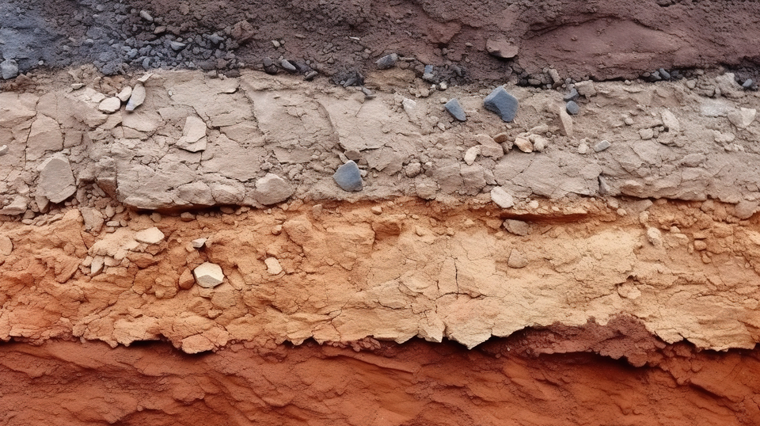

PERFORACIONES PARA AGUA POTABLE E INDUSTRIAS
ESTUDIO DE SUELO, GEOTÉCNIA
¿Quienes Somos?
Nos dedicamos a brindar estudios geológicos en suelo para diferentes obras e infraestructuras, con el objetivo de garantizar la seguridad, estabilidad y durabilidad de las estructuras. Ofrecemos el servicio de perforaciones para pozos de agua, como así también los análisis geoquímicos. Estudios petrológicos para la descripción y clasificación de rocas mediante microscopía.
Servicios
GEOTÉCNICA
Se evalúan las características geotécnicas del suelo y las rocas con el objetivo de proporcionar información esencial para el diseño y la construcción de estructuras. Esto incluye la realización de pruebas de campo y de laboratorio para determinar las propiedades físicas y mecánicas del suelo, así como la evaluación de las condiciones geológicas y geotécnicas del área
Ensayos para clasificación de Suelos, Granulometría.
Límites de Atterberg.
Ensayo SPT
Ensayos Triaxiales en suelos
Determinación de densidades a través de cono de arena, en suelos compactados.
Determinación de Valores de Soporte, (CBR).
Ensayos de Placa de Carga Estática en Sitio sobre suelos.
Cono de penetración dinámico (DCP).
AGUA
Proceso de Evaluación y Tratamiento de Agua Subterránea.
El proceso de obtención y evaluación de agua subterránea para consumo humano implica varias etapas críticas, cada una diseñada para garantizar la calidad y potabilidad del recurso. Estas etapas incluyen:
- Perforación del pozo: Consiste en la excavación controlada hasta alcanzar las capas de agua subterránea. Este procedimiento requiere un análisis previo del terreno para determinar la ubicación óptima y garantizar la eficiencia del pozo.
- Instalación de la bomba de agua: Una vez perforado el pozo, se instala una bomba adecuada para extraer el agua de manera constante y eficiente, asegurando un suministro continuo para el uso planificado.
- Análisis químico de calidad del agua: El agua será considerada potable únicamente cuando cumpla con todos los estándares establecidos por normativas vigentes, como el Código Alimentario Argentino, que especifica valores máximos permitidos para una amplia variedad de parámetros.
Determinaciones esenciales: Para evaluar la calidad del agua, se analizan los siguientes aspectos fundamentales:
- Propiedades organolépticas: Color, olor y sabor.
- Parámetros fisicoquímicos: pH, turbiedad, dureza, hierro y manganeso, arsénico y flúor.
- Parámetros microbiológicos: Presencia de coliformes, Escherichia coli y Pseudomonas aeruginosa.
Evaluaciones adicionales: Además de los parámetros mencionados, dependiendo del origen del agua a tratar, será necesario analizar otros elementos, tales como:
- Metales pesados: Cadmio, plomo, zinc, entre otros.
- Componentes químicos: Sulfatos, detergentes, nitratos, etc.
- Presencia de pesticidas.
La correcta ejecución de estos análisis y el cumplimiento de los límites establecidos aseguran que el agua obtenida sea segura para el consumo humano, protegiendo la salud y el bienestar de la población.
Contacto
Tu Consulta Geológica Empieza Aquí
Ponte en contacto con nosotros para más información.
PODRA ENCONTRARNOS EN NUSTRAS REDES SOCIALES